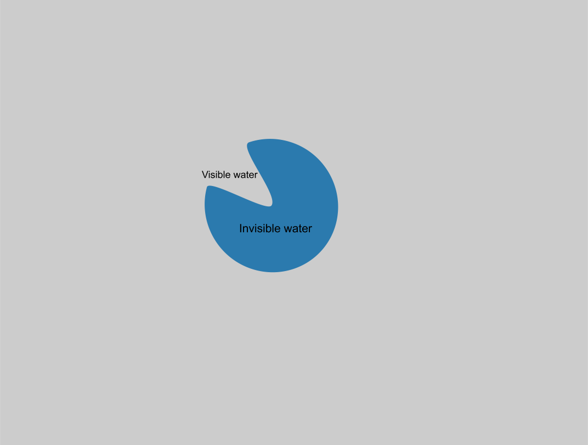
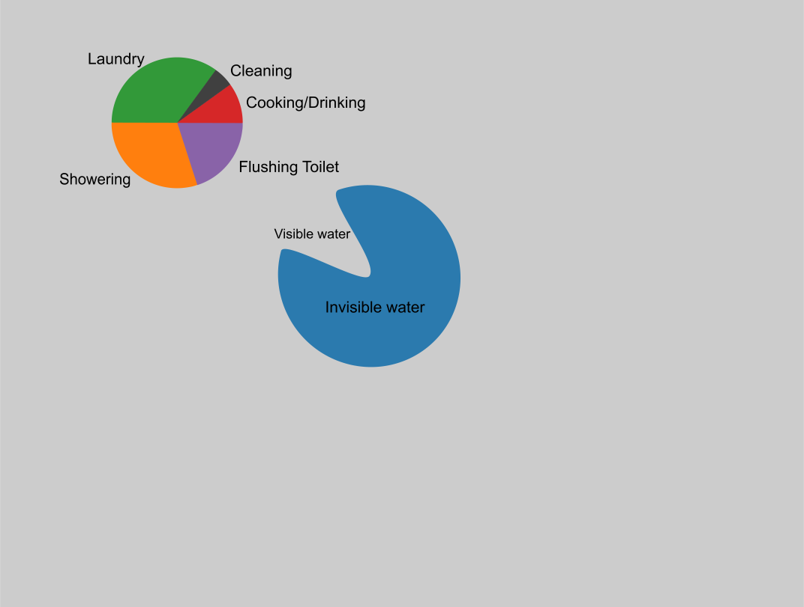
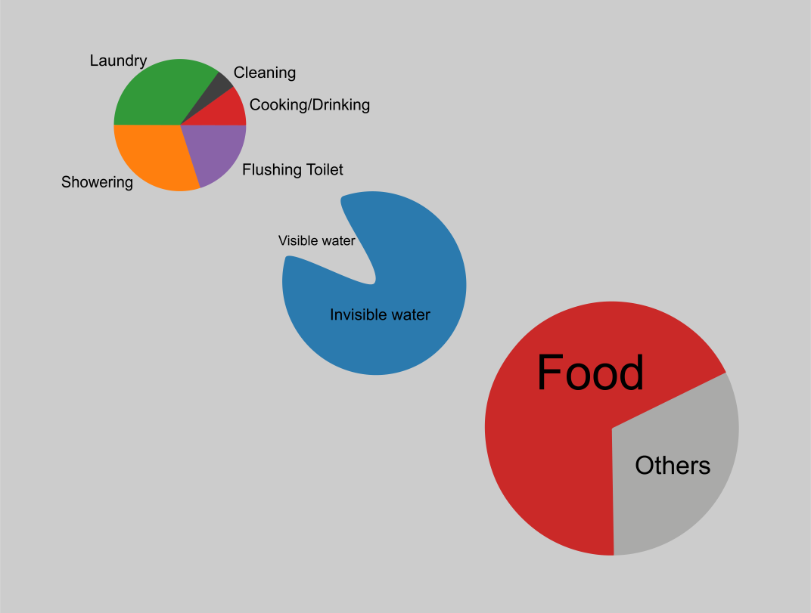
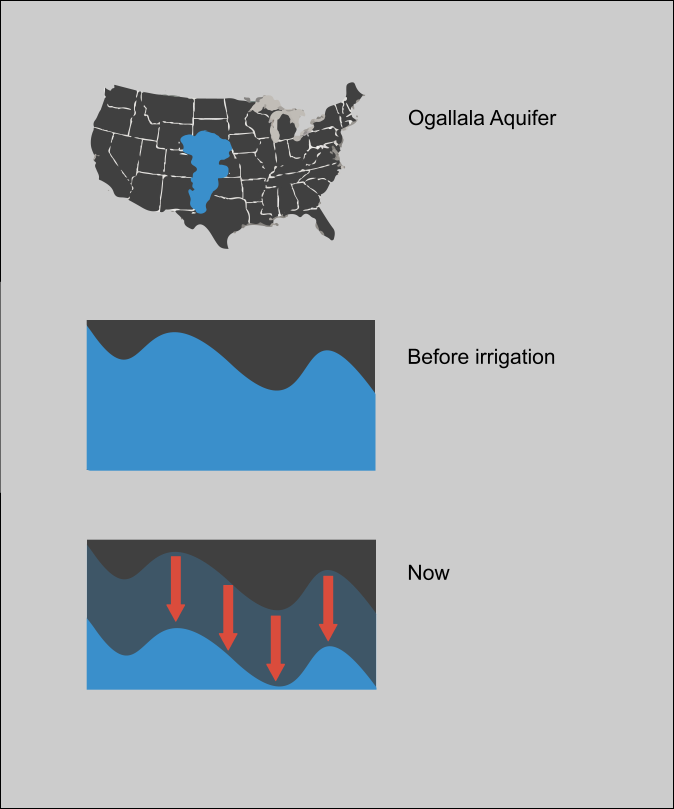
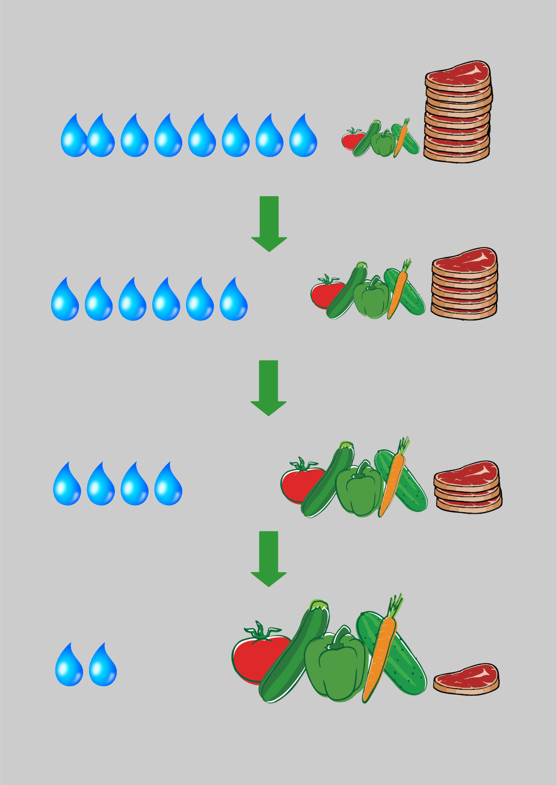

Water Depletion
Some of the water we consume is visible water, some is invisible water.
We use the visible water in our homes. It’s water for cooking, showering, or doing the laundry.
But where does the invisible water come from?
68% of the invisible water is in the food we eat.
Some foods we eat use less water to get produced than others. Especially meat has a very high water footprint.

Why is there so much invisible water in meat?
The majority of the water in meat (98%) is in the food that the animals eat. All this food has to be planted and grown.
One of the main foods that animals eat is corn. One third of the cropland of the USA is used for corn production! The majority of this corn is used for animal feed.
Corn uses more irrigation water than any other crop in the USA. More than half of the corn depends on water of the Ogallala aquifer, a big groundwater reservoir beneath the Great Plains in the USA.

In 1950, farmers started to use the water of the Ogallala aquifer to irrigate their crops. Before that, none of its water was used for irrigation. Since irrigation started, the water tables of the aquifer have been dramatically decreasing. That is because more water is withdrawn for irrigation that what can naturally recharge.
Ever since irrigation started, the water tables have decreased by more than 4 meters over the entire area of the aquifer. That is 450,000 m2, more than 10 times the area of the Netherlands!
A lot of the water has been used to grow food for animals.
Changing your diet has a big impact on water depletion!
The less meat you eat, the more water you save!